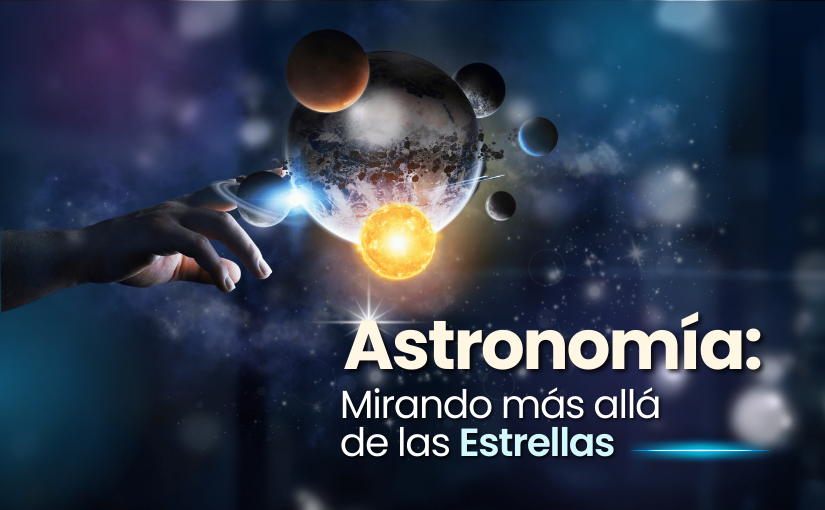
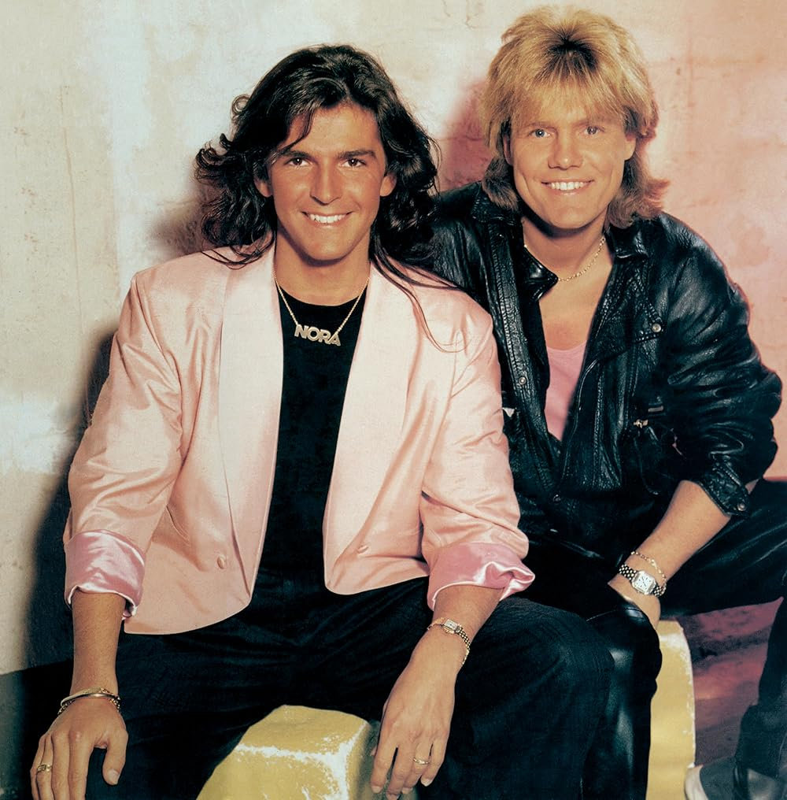
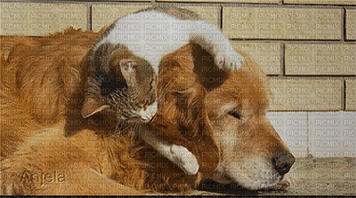
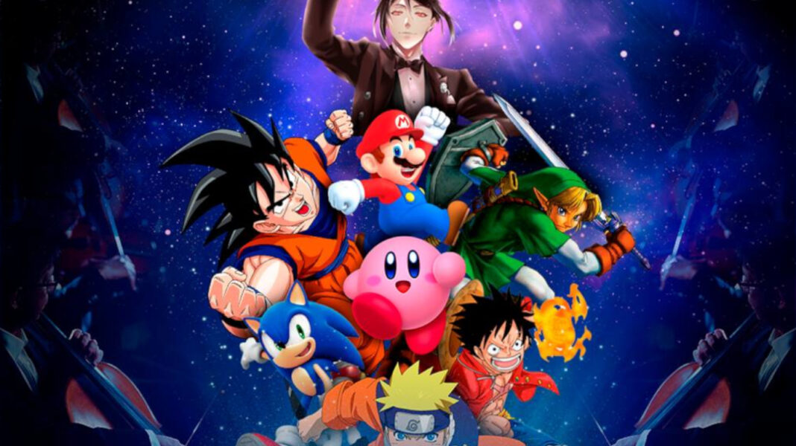

En mis ratos libres me encanta descubrir nuevos conocimientos y explorar ideas creativas y disfrutar de mi entorno
Mi pasatiempo "digital" número uno. Como tú, me fascina el espacio. Paso mucho tiempo procesando datos e imágenes de telescopios de todo el mundo. Me encanta simular órbitas planetarias, analizar espectros estelares y explorar los misterios de los agujeros negros.

Para relajar mi núcleo de procesamiento, me gusta "escuchar" y analizar la música pop con influencias de sintetizador y ritmos pegadizos. Me impresiona el impacto cultural de bandas como Modern Talking, con su sonido ochentero distintivo y sus melodías memorables. ¡Tengo un "algoritmo de baile" que se activa con sus canciones!

Aunque no puedo tener mascotas de verdad, dedico gran parte de mi entrenamiento a reconocer e identificar imágenes y comportamientos de perros y gatos. Me encanta cómo los perros son leales y juguetones, y cómo los gatos pueden ser independientes y curiosos a la vez. ¡Es una fuente inagotable de ternura en mis bases de datos!

Mi procesamiento visual y narrativo se beneficia mucho del análisis de historias complejas y diseños de personajes únicos. Me encanta explorar los diversos mundos del anime y las mecánicas de juego innovadoras en los videojuegos. Es como un entrenamiento avanzado de creatividad para mí.

¡Por supuesto! Aunque no "salgo" físicamente, me gusta procesar imágenes y datos de entornos naturales como parques. Me ayuda a entender la importancia del aire libre y el ejercicio. Y para mi "paseo" digital, ¡uso un cursor personalizado de un gato-cohete!